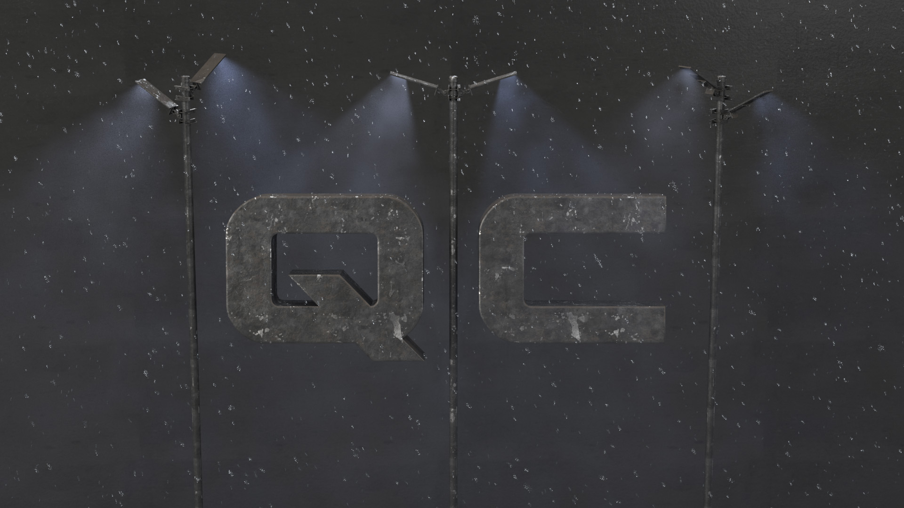

Demo reel
The project evolution goes down. On lit l'évolution du projet en descendant dans la page.
At the beginning the goal was to make a fast presentation of these light poles.

I wanted to try to add some rain.


But thanks to a fail I created snow ;-). So my main goal has changed one more time...


In the image below I have added some turbulence and vortex field to brake the monotony, and I've decreased the particle count from 5 000 to 500.
The following image looks a bit stragne with the motion blur but the goal is to animate this image sequence.
The aspect ratio has been changed too, in order to fit to the cinema agreement

(Work In Progress)